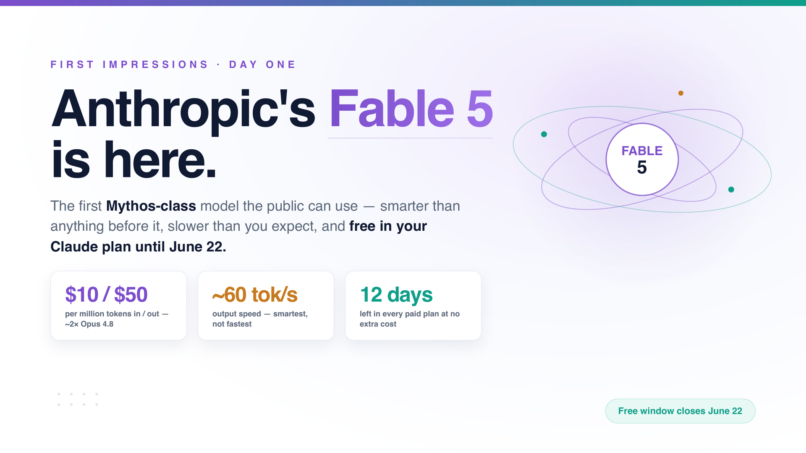
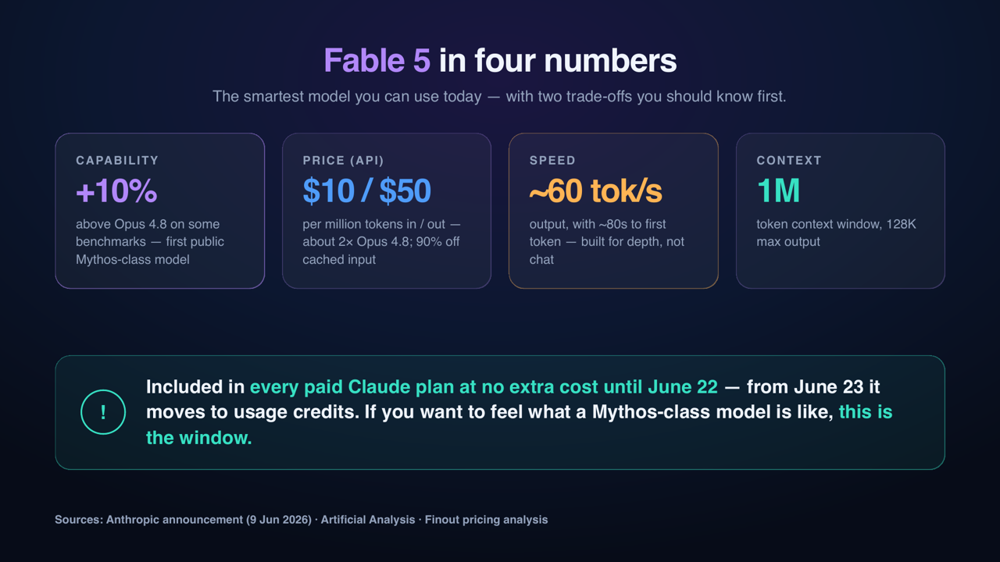
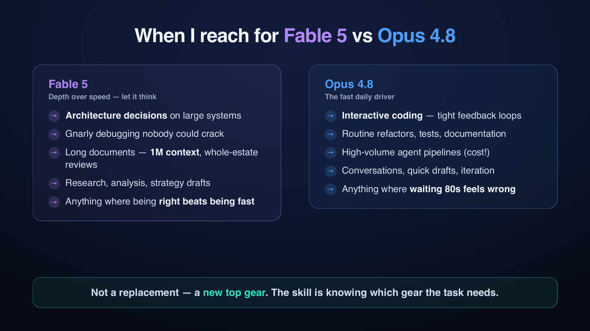

Anthropic released a new model yesterday, and this one is different. Not "another version number" different. Actually different.
It is called Claude Fable 5, and it is the first time the public gets access to a Mythos-class model — the family Anthropic has so far kept internal. I switched my daily setup to it the same day. Here is what I think you should know, in plain numbers, before you decide whether to care.
Fable 5 is, by Anthropic's own announcement, more capable than any model they have ever made generally available — state-of-the-art on nearly every benchmark, and on some of them more than 10% above Claude Opus 4.8, which itself came out only late last month. The pace right now is honestly hard to keep up with.
Two details make this release interesting beyond the benchmarks.
First, the safety design. Anthropic says the broad release is only possible because of new safeguards: in specific high-risk areas, Fable 5 will not answer — instead, your query quietly gets a response from Opus 4.8. This triggers in less than 5% of sessions. Think about that pattern for a second: the guardrail is not a refusal message, it is a fallback to a safer model. I suspect we will see this "model behind a model" pattern a lot more in enterprise AI architecture.
Second, the access model. And this is the part with a clock on it.

Fable 5 is included in every paid Claude plan — Pro, Max, Team, and seat-based Enterprise — at no extra cost until June 22. From June 23, it comes out of the plans and needs usage credits.
So if you have any paid Claude subscription, you have roughly twelve days to use the most capable model on the market for free. After that, you pay separately. I do not know if Anthropic will extend this, but I would not plan on it.
My simple advice: pick one hard problem you have been postponing — a messy architecture decision, a document set nobody wants to read, a bug nobody could crack — and give it to Fable 5 this week. That is the honest way to find out if a Mythos-class model matters for your work.
Pricing (API): $10 per million input tokens, $50 per million output — roughly double Opus 4.8. The standard 90% prompt-caching discount applies, which matters a lot in agent workflows where you resend the same context again and again.
Context: 1 million tokens in, up to 128K out. A whole mid-sized codebase, or a complete contract data room, fits in one conversation.
Speed — read this part before you get excited: Artificial Analysis measured about 60 tokens per second output and ~80 seconds to first token. That is slow. Not "slightly slower" — you will feel it. You ask, and then you wait, watching nothing happen, for over a minute sometimes.
And after a day of using it, my view is: that is fine — if you use it for the right things.

For interactive coding — the tight loop where you ask, check, adjust, ask again — the ~80-second wait kills the rhythm. Opus 4.8 stays my daily driver there, and it is excellent. Same for high-volume agent pipelines: at 2× the price and half the speed, putting Fable 5 in a loop that runs hundreds of times is just burning money.
But for the other kind of work — the deep, slow, "get this right" work — the equation flips completely. Architecture decisions on large systems. The debugging session where three people already gave up. Reading a thousand pages of documents and telling me what actually matters. Strategy drafts where a wrong assumption costs months. There, waiting one minute for a meaningfully better answer is the best trade I have ever been offered. I wrote recently about how AI is brilliant at bounded work and unreliable at coordinated work — my early impression is that Fable 5 moves that boundary. Not removes it. Moves it.
One more practical note: in tools like Claude Code you can switch models per task. That is exactly how I run it now — Fable 5 for the hard thinking, Opus 4.8 for everything interactive. The skill is not "use the best model". The skill is knowing which gear the task needs.
Three things I keep thinking about:
The price of intelligence is forking. We now have models at very different price-performance points, and the gap is widening. Teams that route work to the right model will quietly run 3–5× cheaper than teams that send everything to the flagship. Model routing is becoming a real cost discipline, the same way cloud instance selection became one.
Capability windows are the new marketing. "Free for 12 days, then pay" is a very deliberate move: let everyone feel the difference, then charge for it. Expect this pattern from every lab. Budget owners should start treating model access like a procurement category, not a developer tool subscription.
The safety architecture is the quiet headline. A frontier model that silently delegates risky queries to a safer model is a genuinely new pattern. Whatever you think about AI safety debates, this is what "governance built into the architecture" looks like in practice — and enterprises will copy it for their own internal AI gateways.
I will write a follow-up once I have a few weeks of real use behind me — especially on whether the brownfield/legacy work I wrote about last time actually benefits, or whether the keyhole problem stays the keyhole problem.
If you have a paid Claude plan: you have until June 22. Pick your hardest problem and see for yourself. Then tell me what you found — I am collecting impressions.
Anthropic shipped Fable 5 yesterday — the first Mythos-class model the public can actually use. I switched my daily setup to it on day one. The short version: smartest model available today, about 2x the price of Opus 4.8, and noticeably slow (~80 seconds to first token). And — the part with a clock on it — it's included in every paid Claude plan at no extra cost only until June 22. After that, usage credits. I've written up the numbers, the trade-offs, and how I'm actually splitting work between Fable 5 and Opus 4.8 — plus why the "fallback to a safer model" guardrail design might be the quiet headline. If you have a paid Claude plan, you have 12 days to try the best model on the market for free. Article below. #Claude #EnterpriseAI